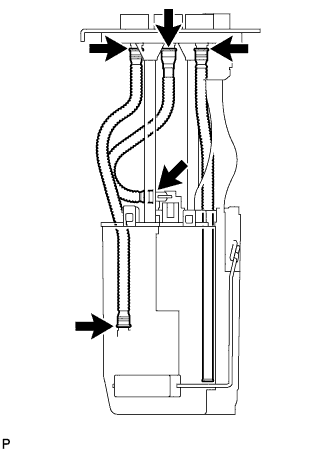
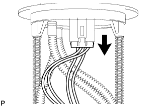
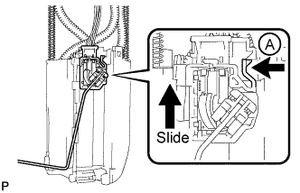
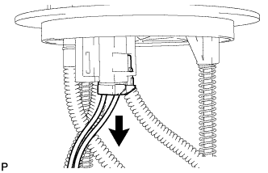
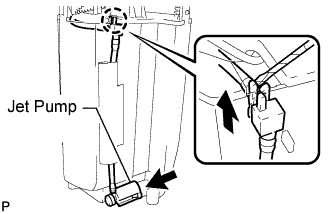
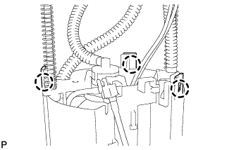
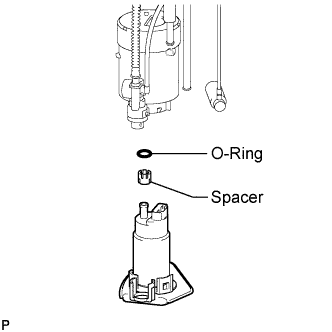

FUEL PUMP (for Single Tank Type) > DISASSEMBLY |
 |
| 1. REMOVE FUEL SENDER GAUGE ASSEMBLY |
 |
Disconnect the fuel sender gauge connector.
 |
Press down on the sender gauge claw labeled A. Then slide the sender gauge upward to remove it.
| 2. REMOVE NO. 1 FUEL SUB-TANK |
 |
Disconnect the fuel pump connector.
 |
Disconnect the jet pump from the sub-tank.
Using a small screwdriver, detach the claw from the sub-tank.
 |
Using a screwdriver, detach the 3 claws from the claw holes.
 |
Using a screwdriver, detach the 3 claws from the claw holes.
| 3. REMOVE FUEL PUMP |
 |
Using a screwdriver, detach the 5 claws from the claw holes and disconnect the fuel pump from the fuel filter case.
 |
Disconnect the fuel pump wire harness connector from the fuel pump to remove it.
 |
Remove the O-ring and spacer from the fuel pump.
| 4. REMOVE NO. 1 FUEL SUCTION SUPPORT |
 |
Detach the 2 claws from the claw holes to remove the fuel suction support.